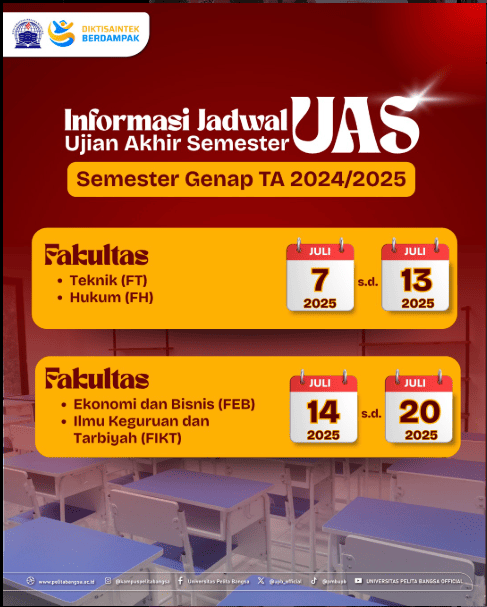
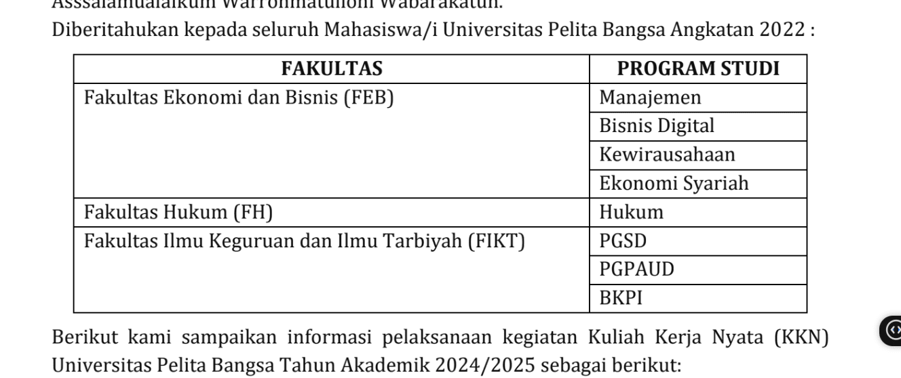

SURAT EDARAN TENTANG PELAKSANAAN UJIAN AKHIR SEMESTER 2025
25 Juni 2025, 10:00
Sedangkan bagi mahasiswa yang belum bisa mengikuti UAS pada tanggal tersebut, maka diberikan kesempatan untuk mengikuti UAS Susulan yang akan dilaksanakan pada waktu yang bersamaan secara daring bagi seluruh fakultas di lingkungan Universitas Pelita Bangsa yaitu pada tanggal 25 s.d. 27 Juli 2025.
Baca selengkapnyaSURAT EDARAN TENTANG PELAKSANAAN KULIAH KERJA NYATA (KKN) TAHUN AKADEMIK 2024/2025
25 Juni 2025, 10:00
Berikut kami sampaikan informasi pelaksanaan kegiatan Kuliah Kerja Nyata (KKN) Universitas Pelita Bangsa Tahun Akademik 2024/2025 Sebagai Berikut:
1. Kegiatan KKN dilaksanakan pada tanggal 20 Juli 2025 sampai dengan 25 Agustus 2025. Diwajibkan kepada Mahasiswa/i dapat mengikuti kegiatan KKN ini sesuai dengan timeline terlampir.
Baca selengkapnyaPEMBUKAAN PROGRAM MAGANG BERDAMPAK
26 Juli 2025, 10:00

Magang Berdampak adalah program magang dari Direktorat Pembelajaran dan Kemahasiswaan, Kemendiktisaintek yang menekankan kontribusi nyata mahasiswa terhadap mitra industri, organisasi, atau masyarakat.
Baca selengkapnya